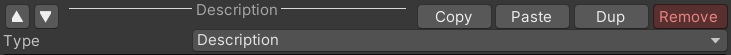

3_EditInformation
Description
DocInformation is construct by many DocComponent. You can add as many as you want.
You can checkout DocComponent type's detail in the next part.
Add New DocComponent
Just use Add or Paste, but notice that you can't Paste before Copy
Basic Edit Function

| ▲ & ▼ | Change the sort order of components |
|---|---|
| Copy | Copy this component into System Clipboard |
| Paste | Paste component from System Clipboard |
| Dup | Duplicate this component |
| Type | Select this component's type |
DocComponent Template
After creating some general component structures, you can store them as Templates, which can be called directly in the future.
| Save as new | Save this component structures |
|---|---|
| Loas from old | Load structures saved before |
| edit | You can delete useless Template here |